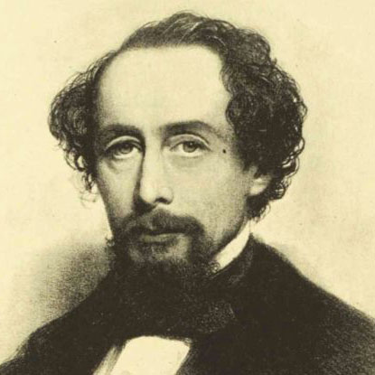
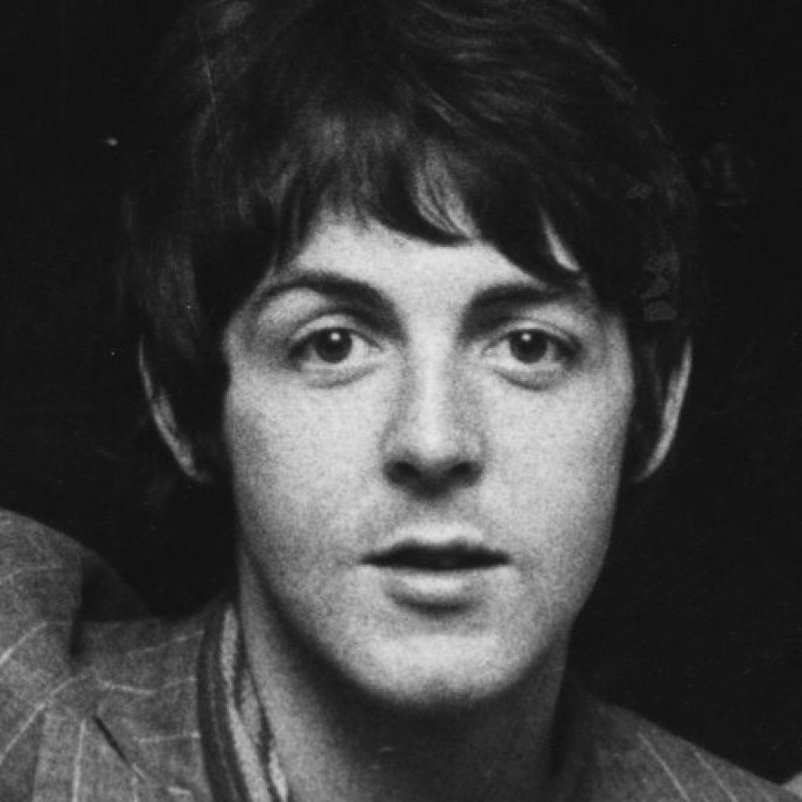

Famous speakers of English
-
Margaret Thatcher
-
John Lennon
-
Wicipedia > 
Charles Dickens
-
William Shakespeare
-
Wicipedia > 
Paul McCartney
English is a member of the West Germanic language family and is related to Dutch, German and Lëtzebuergesch (Luxemburgish). It is written using the Latin script and is read from left to right. English is based on the Latin alphabet. The Number of Words in the English Language is estimated at over one million.
English emerged from the fusion of dialects, which were brought to Great Britain by Germanic settlers known as Angles. It was also influenced by the Old Norse and Norman French during the Vikings’ invasions and the Norman conquest. Following the influence of the British Empire from the 17th to mid-20th century, English has spread significantly across the world. Even today, through American cultural channels (e.g. music, cinema, and TV) English is a lingua franca of choice in many contexts.
765 million people speak English across the world, including 360 million people who speak it as their first language, and another 430 million who speak it as their second language. Added to this, the number of people who speaks English as a foreign language is estimated at 750 million, which is more than those who speak it as a first language.
It is believed that 1 out of 4 people in the world speaks English with various levels of competence. English is the official language of Australia, Canada, Ireland, New Zealand, the United Kingdom and the United States of America, as well as more than 50 other countries around the world.
British cuisine is associated with the United Kingdom and has been described as "unfussy dishes made with quality local ingredients, matched with simple sauces to accentuate flavour, rather than disguise it". British cuisine has been influenced by the people who have migrated to the UK over the years, resulting in dishes such as the Anglo-Indian chicken tikka masala, or the popular fish and chips.
Portuguese and Spanish Jewish immigrants were the first who introduced the deep-fried fish. Other UK specialities include Cornish pasties, Scottish haggis, and Welsh cakes. Cuisines from other English-speaking countries include the American hamburger, the Indian curry, the New Zealand pavlova, the Caribbean callaloo, the Irish stew and the South-African bobotie, to name only a few.
The architecture of the Anglo-Saxons was the start of English architecture. Among the surviving English churches, at least 50 are of Anglo-Saxon origin. Most of them are built in stones or bricks and their architectural style ranges from Coptic-influenced architecture to an architecture characterized by pilasters, blank arcading, and triangular-headed windows. Many English country houses and properties are now managed by English Heritage and the National Trust.